A home office's color gets chosen almost as an afterthought more often than any other room in the house.
That's a mistake, color affects focus and mood more in a workspace than almost anywhere else, since it's the backdrop for hours of concentrated time.
This covers how to actually choose one well, not just a list of trending shades.

Trust Your Own Eye
A color that photographs beautifully but feels wrong to sit with daily isn't the right choice, regardless of how popular it is.
Living with a sample for a few days, in the actual room, catches what a quick swatch comparison can't.
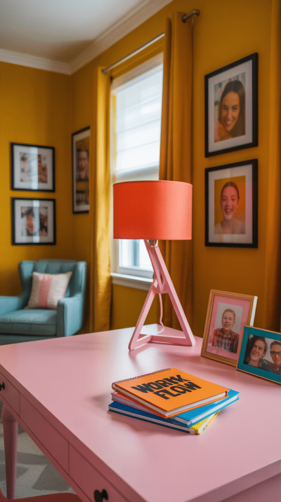
Don't Forget Furniture and Decor
The wall color is only part of the palette, furniture, shelving, and decor all need to work with it, not just the paint can.
Choosing furniture finishes before finalizing the wall color, or vice versa, avoids the common mistake of two decisions made in isolation that don't actually match.
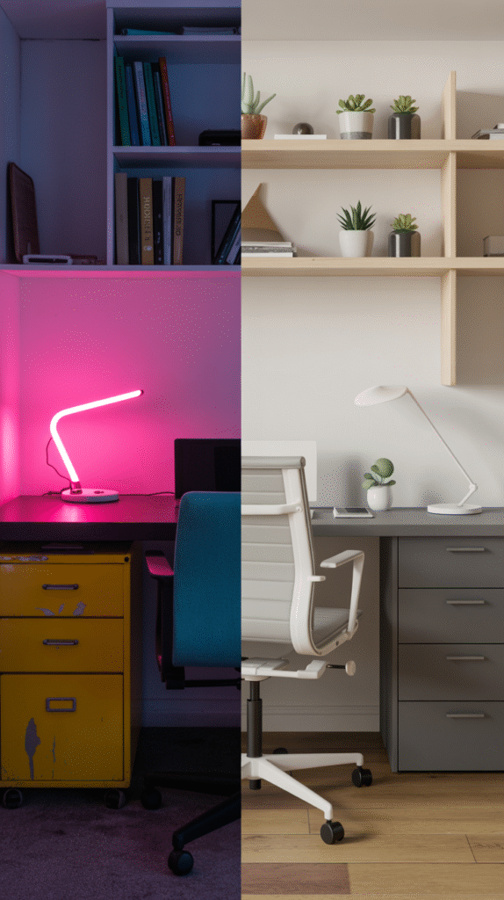
Texture and Finish Matter Too
A matte finish reads as more sophisticated and hides wall imperfections better; a satin or eggshell finish is more washable and practical for a high-touch room.
The same color in different finishes can read as noticeably different, which is worth testing alongside the color itself.
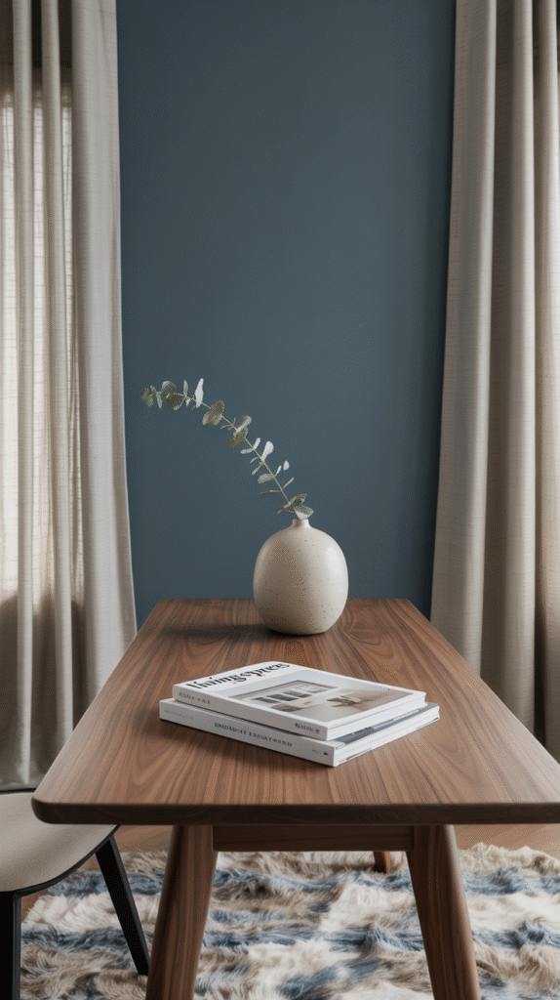
Color Combos That Actually Work
Sage green with warm wood tones, navy with brass accents, and soft terracotta with cream are all combinations that read as considered rather than trend-chasing.
These pairings tend to age better than more of-the-moment color choices, which matters in a room that's expensive and disruptive to repaint often.
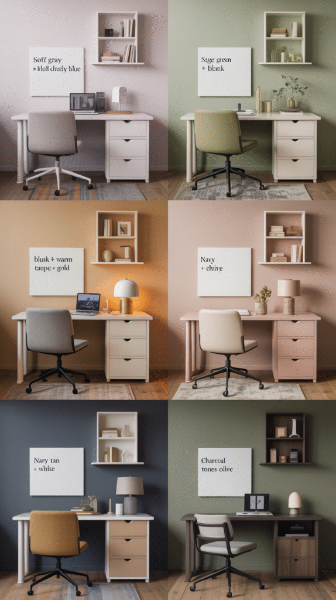
Are Accent Walls Still Worth It?
A single accent wall, especially behind the desk in view during video calls, still delivers real visual impact without committing the whole room to a bold color.
This remains one of the lowest-risk ways to bring in a stronger color, since three walls stay neutral as a safety net.
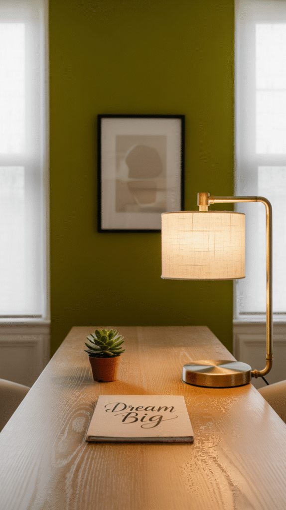
Pair Colors Without It Looking Off
Two colors from the same family, varying mainly in saturation, pair more safely than two unrelated hues competing for attention.
A neutral base with a single accent color gives most of the visual interest of a bolder palette with much less risk of it feeling chaotic.
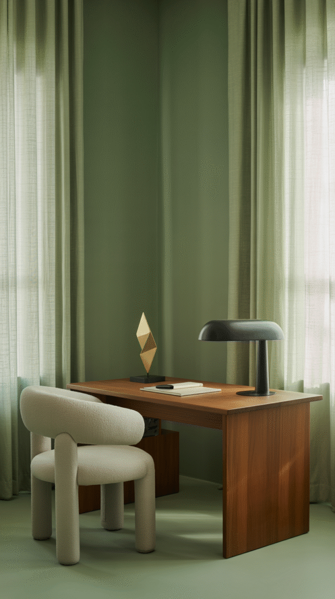
Match the Color to the Room's Natural Light
A north-facing room with cooler, dimmer light handles warm colors better; a south-facing room with abundant warm light can carry cooler tones without feeling cold.
Testing a sample swatch at different times of day, not just once, catches how dramatically a color can shift between morning and evening light.
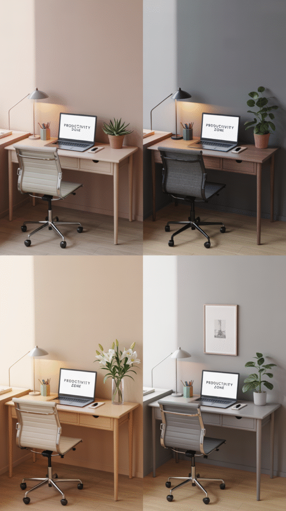
Start With the Desired Feeling
A calm, muted palette suits deep-focus work; a more energized color suits a role that leans creative or collaborative.
Deciding on the feeling first, before browsing paint swatches, narrows the color options considerably and keeps the choice purposeful rather than reactive.
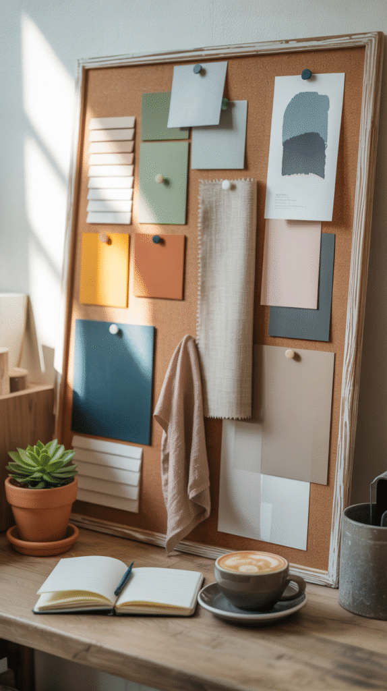
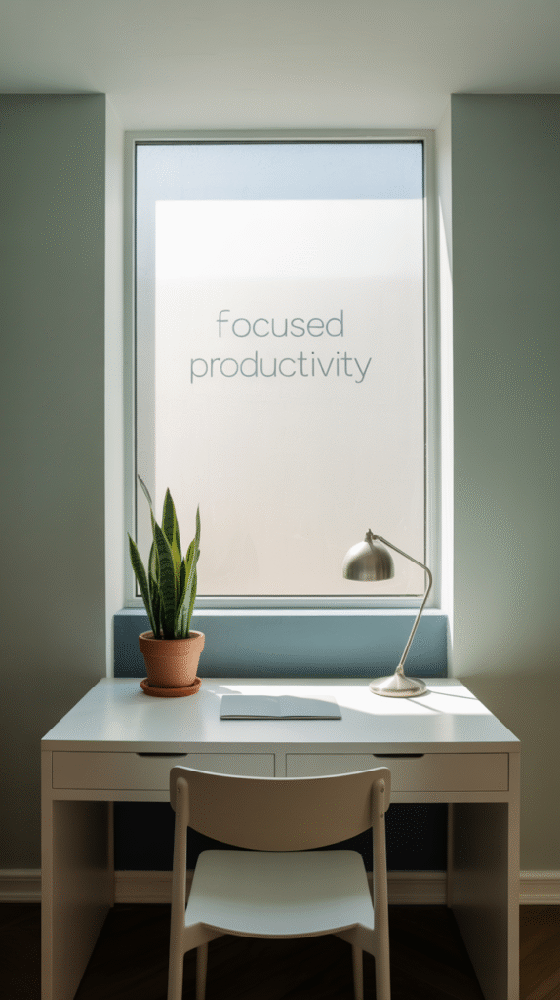
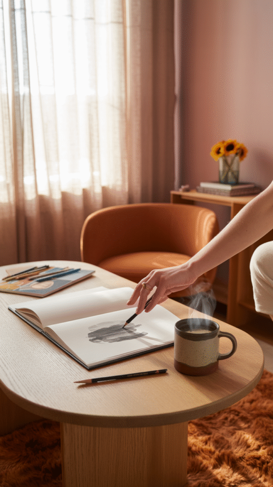
Why Color Actually Matters Here
A color that works beautifully in a living room can feel distracting or draining in a space meant for sustained focus.
The right color supports the kind of work actually happening in the room, which makes this a more functional decision than a purely aesthetic one.
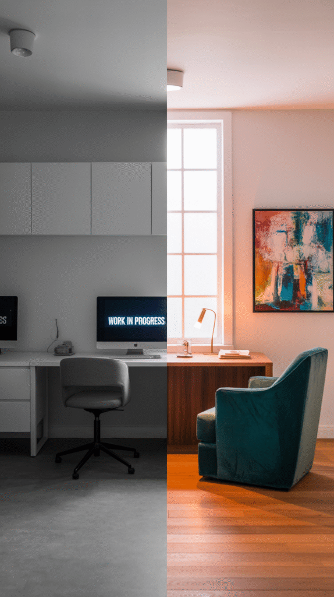
Go With the Vibe, Not Just the Trend
None of these factors need to be weighed equally for every home office.
Start with the desired feeling and the room's natural light, since both shape every other choice, then layer in pairing, texture, and furniture from there.
The right color is the one that actually supports how the room gets used every single day, trend or not.